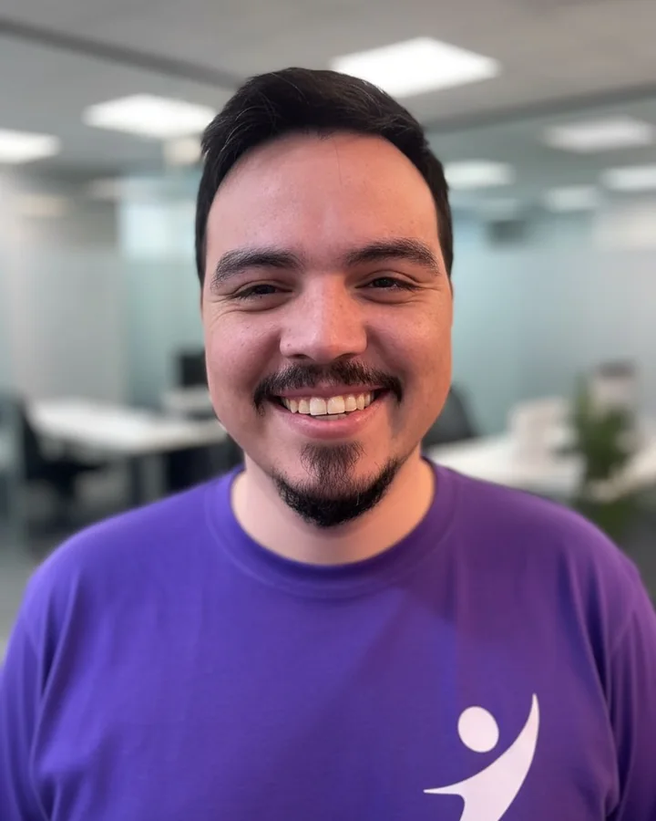
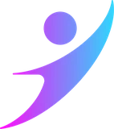
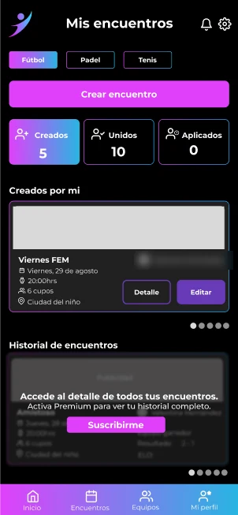
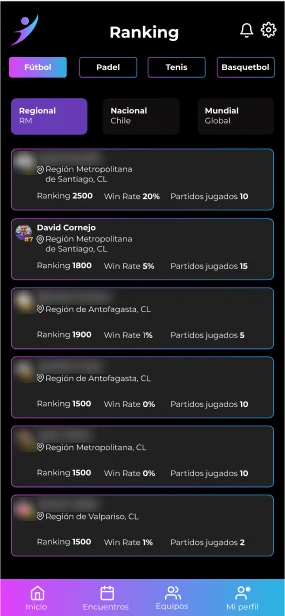

Llevar IA a producción de forma segura
Harness engineering, agentes, MCP y guardrails para equipos y empresas.
Prueba: el harness de Alcancía, con revisores y MCP de solo lectura
David Cornejo
AI engineering en Santiago de Chile

He trabajado en BancoEstado Codelco vía Vigalab Tanner vía Amaris Consulting SONDA
Harness engineering, agentes, MCP y guardrails para equipos y empresas.
Prueba: el harness de Alcancía, con revisores y MCP de solo lectura
Del prototipo a producción, con pruebas automáticas y versiones publicadas.
Prueba: Zyvoi, lanzada en iOS y Android
Arquitectura, prácticas de ingeniería y un equipo que entrega.
Prueba: Tech Lead en BancoEstado, con un equipo de 3 desarrolladores

Zyvoi
Cofundador y CEO desde mayo de 2025.
Una app chilena para encontrar partidos, armar equipos y reservar canchas: fútbol, pádel, tenis, básquetbol y más.
En producción para los recintos deportivos: canchas, horarios y precios, reservas y pagos con Mercado Pago, con el pago dividido entre los jugadores.
recinto.zyvoi.com

Así trabajo: parto de un problema real y cada vuelta deja algo que me sirve para la próxima.
Mis hijos estudiaban desde la foto del cuaderno y no había una herramienta simple para eso. Así nació Repasa.
Con agentes de IA llego a una versión usable, con pruebas automáticas, y la publico como código abierto. Así salieron las cinco apps.
Al conectar Alcancía a una cuenta real de Mercado Pago aparecieron las compras en cuotas y los saldos que no cuadraban. Hoy la app los entiende.
Lo aprendido en agentes, MCP y producto llega a Zyvoi y a mi trabajo como Tech Lead, y abre los próximos problemas por resolver.
Cada vuelta deja un producto, una comunidad y un aprendizaje.
Lo que hace girar el ciclo rápido y con control. Cada pieza, con su prueba.
Diseño el entorno donde trabajan los agentes: una guía única por proyecto (AGENTS.md), herramientas y permisos acotados, y pruebas que funcionan como compuerta antes de cada cambio.
Ver el AGENTS.md de AlcancíaEquipos de desarrollo completamente automatizados corriendo en Raspberry Pi con OpenClaw y Hermes Agent, y flujos de agentes para ventas y contenido con bitácoras que aprenden.
Claude Code, Codex y Gemini CLI como equipo del día a día, con subagentes especializados que revisan privacidad, seguridad y aportes de la comunidad.
Ver los proyectosServidores MCP para que la IA de cada persona consulte sus propios datos (Alcancía) y herramientas internas para Zyvoi, con el contexto justo y nada más.
Ver el servidor MCP de AlcancíaApps que usan la IA y la suscripción de cada persona, con transcripción local (whisper.cpp) y respuestas validadas antes de usarse.
Cómo usa Minuta tu IAFormación en pentesting aplicada a los agentes: mínimo privilegio, llaves en el Llavero, solo lectura y revisión humana antes de publicar.
Ver los agentes revisoresEn los cinco arquetipos de Boris Cherny, mi fuerte es prototipar, construir e impulsar. Los arquetipos, según Inc.
Cuatro metas concretas, cada una con su forma de medición.
Seis apps de código abierto para escritorio, hechas con un framework propio, con pruebas automáticas, revisión de privacidad en cada cambio y guías para agentes de IA.
El framework con el que hago todas estas apps: piezas probadas (tu propia IA, idiomas, actualizaciones, un catálogo de la comunidad…) que se enchufan en una app nueva en vez de escribirlas de cero. Cada app que hago deja piezas para la siguiente.
Defino qué tiene que cambiar para el usuario y para el negocio; el stack se elige al servicio de eso.
Versiones que se pueden probar con usuarios reales desde el inicio y que mejoran en cada ciclo.
Prueba: las versiones publicadas de las apps abiertasCada proyecto tiene una guía única con reglas, arquitectura y cómo probar cada cambio.
Prueba: AGENTS.md · Alcancía, AGENTS.md · MinutaMínimo privilegio, secretos en el Llavero y agentes que revisan privacidad antes de cada cambio.
Prueba: los agentes revisores de AlcancíaDe soporte técnico a liderar equipos de desarrollo y cofundar una startup.
Estrategia, producto y crecimiento de una app de comunidad deportiva pensada para Latinoamérica.
Google Cloud (GCP), Mercado Pago
Llegué a liderar un equipo de 3 desarrolladores.
AWS, Salesforce, Node.js, NestJS, Next.js y más
Lideré CoWatch para Codelco: trazabilidad de contactos estrechos con IoT durante el COVID-19.
IoT, AWS
En Tanner: financiamiento automotriz.
En el área de AFP.
Ingeniería en Informática
INACAP, 2009 – 2014
Español nativo, inglés profesional
Empiezo por la casa. Soy de Santiago, estoy casado y soy papá de tres, y casi todo lo que construyo partió como algo que nos hacía falta: Repasa, para que mis hijos estudien desde la foto del cuaderno; Alcancía, para ordenar las finanzas de la casa; Minuta, para mejorar en mis reuniones.
Creo que tus datos son tuyos y que la IA que los lee debe ser la tuya. Y creo que el deporte junta a la gente: por eso existe Zyvoi.
David
Converso con equipos que quieren llevar IA a producción de forma segura, con personas que quieren sumarse o invertir en Zyvoi y con quien quiera aportar a las apps abiertas.